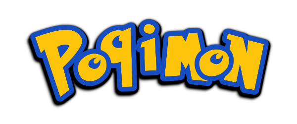

<div class="mainpage">
  <div class="flex__column">
    <div class="jumbotron m-4 mt-5 p-4 bg-light">
      
      <h1 class="display-4">Learning Version</h1>
      <p class="lead">Game developed by group 4th, FPGS DAM.</p>
      <p class="lead">Jorge Sánchez-Alor, Antonio De Gea, Adrián Rodríguez.</p>
      <hr class="my-4">
      <p>To download the videogame go to <b>Download</b> at the navbar.</p>
      <p>Click the following button to go to the gitGub repository.</p>
      <p class="lead">
        <a class="btn btn-dark btn-lg" target="_blank" href="https://github.com/bokdelajungla/TFG_DAM_Edix_Poqimon_Game">Repositorio</a>
      </p>
    </div>
  </div>
</div>

